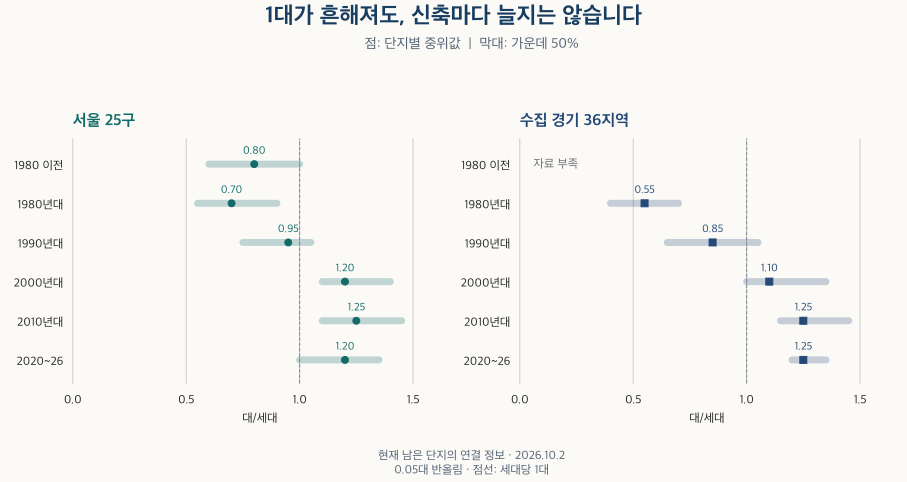
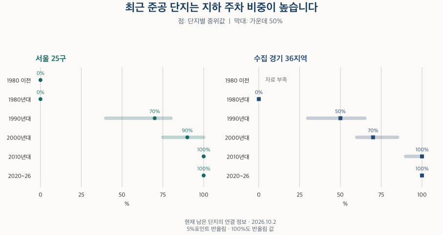

아파트의 진화 · 주차 조건
세대당 주차 1대, 어느 준공 연대부터 흔해졌을까?
서울·수집 경기의 준공 연대별 세대당 주차와 지하 주차 비율을 비교합니다. 중위·분포·지역 차이, 누락 단지와 신축·구축 비교의 한계를 확인합니다.
분석 기간 · 준공 연대별 현재 단지 · 서울 25구·수집 경기 36개 지역 | 자료 기준일 · 2026-10-02
아파트 소개에서 “세대당 주차 1대”를 보면 이제는 기본 조건처럼 느껴집니다. 하지만 지금 남아 있는 단지의 주차 정보를 준공 연대로 나누면 차이가 큽니다. 이 글의 서울·수집 경기 표본에서는 2000년대 준공 집합부터 세대당 주차 중위값이 1대를 웃돌았습니다. 그렇다고 최근 지어진 모든 단지에 주차 공간이 넉넉하거나, 신축일수록 계속 늘어난 것은 아닙니다.
K-apt 총주차대수와 세대당 주차대수는 어떻게 다른가요?
K-apt 관리시설정보는 지상·지하·총주차대수를 구분합니다. 총주차대수를 같은 단지의 세대수로 나누면 세대당 주차대수가 됩니다. 예를 들어 가상의 500세대 단지에 주차면이 600개라면 600 ÷ 500 = 1.20대/세대입니다. 등록 차량 수나 실제 비어 있는 주차면을 나눈 계산은 아닙니다.
분모가 중요합니다. 이 글은 단지 목록과 건축물대장 등을 연결한 세대수가 K-apt의 세대수와 일치하고, 준공연도도 맞는 경우에만 비율을 계산합니다. 지하 비율은 지상과 지하의 합이 총주차대수와 같을 때만 제공합니다. 지상 또는 지하의 명시된 0은 보존하지만, 총주차대수의 0은 미기재 가능성이 있어 주 비교에서 제외합니다. 빈칸을 0으로 채우지 않습니다.
자료 시점은 2026년 10월 2일입니다. 범위는 서울 25구와 수집한 경기 36개 지역이며 인천과 경기 전체를 포함하지 않습니다. 아파트·주상복합 및 아파트/주상복합으로 분류된 도시형 생활주택을 포함하고, 연립으로 분류되거나 유형이 없는 단지의 주차값은 보류했습니다. 빠진 단지도 정보 가용률의 전체 단지 분모에는 남겼습니다.
세대당 주차 1대는 어느 준공 연대부터 흔해졌나요?
현재 확인 가능한 단지들의 중위값은 서울·수집 경기 모두 1990년대보다 2000년대 준공 집합에서 높고, 2000년대에는 1대를 넘습니다. 1대 이상인 단지 비중도 이 집합에서 서울 약 90%, 수집 경기 약 95%입니다. 연결된 표본 안에서 흔해졌다는 뜻이지, 그 시기부터 모든 아파트의 기준이 되었다는 뜻은 아닙니다.

| 지역·준공 연대 | 중위값 | 가운데 50% 구간 | 1대 이상 단지 비중 | 세대수 가중 보조값 |
|---|---|---|---|---|
| 서울 · 1980년 이전 | 0.80 | 0.60–1.00 | 30% | 보류 |
| 서울 · 1980년대 | 0.70 | 0.55–0.90 | 15% | 0.70 |
| 서울 · 1990년대 | 0.95 | 0.75–1.05 | 40% | 0.85 |
| 서울 · 2000년대 | 1.20 | 1.10–1.40 | 90% | 1.30 |
| 서울 · 2010년대 | 1.25 | 1.10–1.45 | 90% | 1.30 |
| 서울 · 2020~2026년 | 1.20 | 1.00–1.35 | 80% | 1.30 |
| 서울 · 연도 미상 | 자료 부족 | 자료 부족 | 보류 | 보류 |
| 수집 경기 · 1980년 이전 | 자료 부족 | 자료 부족 | 보류 | 보류 |
| 수집 경기 · 1980년대 | 0.55 | 0.40–0.70 | 보류 | 0.55 |
| 수집 경기 · 1990년대 | 0.85 | 0.65–1.05 | 35% | 0.85 |
| 수집 경기 · 2000년대 | 1.10 | 1.00–1.35 | 95% | 1.25 |
| 수집 경기 · 2010년대 | 1.25 | 1.15–1.45 | 90% | 1.30 |
| 수집 경기 · 2020~2026년 | 1.25 | 1.20–1.35 | 95% | 1.30 |
| 수집 경기 · 연도 미상 | 자료 부족 | 자료 부족 | 보류 | 보류 |
표의 ‘가운데 50%’는 단지들을 비율 순으로 세웠을 때 중간 절반이 놓인 구간입니다. 전체 최솟값·최댓값이나 추정 오차 범위가 아닙니다. 중위값이 같아도 이 구간이 넓으면 단지 간 차이가 큽니다. 10단지 미만인 집합은 ‘자료 부족’으로 남기고, 작은 분자·여집합을 드러낼 수 있는 비중도 보류했습니다.
반례도 있습니다. 서울의 2020~2026년 준공 집합은 중위 약 1.20대이고 1대 이상 단지 비중은 약 80%입니다. 2010년대의 약 1.25대·90%보다 낮습니다. 지역·규모·주택 유형 구성이 다른 단지들을 비교하므로, 이 차이만으로 최근 설계가 나빠졌다고 말할 수는 없습니다. ‘연식 하나로 주차 조건이 정해진다’는 해석을 피해야 한다는 근거입니다.
세대수 가중 보조값은 관측 단지의 주차대수 합 ÷ 세대수 합입니다. 큰 단지가 더 큰 비중을 갖기 때문에 단지별 중위값과 답하는 질문이 다릅니다. 예를 들어 서울 2000년대는 중위 약 1.20대, 가중 보조값 약 1.30대입니다. 한 단지의 세대수가 해당 집합의 20%를 넘으면 이 보조값은 보류합니다. 단지와 세대수 가중치의 차이도 함께 읽어보세요.
주차면이 많아진 것과 지하 주차 비율은 같은 변화인가요?
서로 다른 지표입니다. 세대당 주차가 같아도 지상 위주인 단지와 지하 위주인 단지는 이용 경험이 다를 수 있습니다. 아래는 단지마다 지하 주차대수 ÷ 총주차대수를 계산한 뒤 분포를 비교한 결과입니다. 광역 전체의 지하 주차면 합계를 전체 주차면으로 나눈 비율은 아닙니다.

| 지역·준공 연대 | 지하 비율 중위값 | 가운데 50% 구간 |
|---|---|---|
| 서울 · 1980년 이전 | 0% | 0–0% |
| 서울 · 1980년대 | 0% | 0–0% |
| 서울 · 1990년대 | 70% | 40–80% |
| 서울 · 2000년대 | 90% | 75–100% |
| 서울 · 2010년대 | 100% | 100–100% |
| 서울 · 2020~2026년 | 100% | 100–100% |
| 서울 · 연도 미상 | 자료 부족 | 자료 부족 |
| 수집 경기 · 1980년 이전 | 자료 부족 | 자료 부족 |
| 수집 경기 · 1980년대 | 0% | 0–0% |
| 수집 경기 · 1990년대 | 50% | 30–65% |
| 수집 경기 · 2000년대 | 70% | 60–85% |
| 수집 경기 · 2010년대 | 100% | 90–100% |
| 수집 경기 · 2020~2026년 | 100% | 100–100% |
| 수집 경기 · 연도 미상 | 자료 부족 | 자료 부족 |
지하 주차 비율은 최근 준공 집합에서 높습니다. 다만 지하에 공간이 있다는 정보만으로 엘리베이터나 각 동까지 비를 맞지 않고 갈 수 있는지는 알 수 없습니다. 경사로·통로·기계식 주차·차량 높이 제한·구역별 사용 조건도 이 비교에서는 측정하지 않았습니다. 1.20대라는 숫자와 지하 비율을 함께 보되, 두 숫자로 실제 이용 편의를 모두 설명하지는 마세요.
정보가 없는 오래된 단지가 빠지면 결론도 달라지지 않나요?
가장 중요한 반론입니다. K-apt에 정보가 연결되고 세대수·연도가 일치하는 단지만 측정할 수 있어, 크고 정보가 잘 갖춰진 단지가 더 많이 포함될 수 있습니다. 특히 작은 단지가 많은 집합에서는 단지 수 기준 가용률과 세대수 기준 포괄률이 크게 다릅니다.
| 지역·준공 연대 | 단지 수 가용률 | 알려진 세대수 포괄률 | 세대수 미상 단지 비중 |
|---|---|---|---|
| 서울 · 1980년 이전 | 10–20% | 40–50% | 20–30% |
| 서울 · 1980년대 | 40–50% | 80–90% | 20–30% |
| 서울 · 1990년대 | 40–50% | 80–90% | 0–10% |
| 서울 · 2000년대 | 10–20% | 70–80% | 0–10% |
| 서울 · 2010년대 | 30–40% | 80–90% | 0–10% |
| 서울 · 2020~2026년 | 30–40% | 60–70% | 0–10% |
| 서울 · 연도 미상 | 자료 부족 | 자료 부족 | 자료 부족 |
| 수집 경기 · 1980년 이전 | 자료 부족 | 자료 부족 | 자료 부족 |
| 수집 경기 · 1980년대 | 10–20% | 60–70% | 20–30% |
| 수집 경기 · 1990년대 | 50–60% | 80–90% | 10–20% |
| 수집 경기 · 2000년대 | 50–60% | 90–100% | 0–10% |
| 수집 경기 · 2010년대 | 60–70% | 90–100% | 0–10% |
| 수집 경기 · 2020~2026년 | 50–60% | 80–90% | 0–10% |
| 수집 경기 · 연도 미상 | 자료 부족 | 자료 부족 | 자료 부족 |
예를 들어 서울 2000년대는 전체 단지 수 중 주차 비율을 계산할 수 있는 비중이 10~20% 구간이지만, 세대수를 아는 재고 안에서 포괄하는 세대수는 70~80% 구간입니다. 두 숫자는 모순이 아닙니다. 많은 소규모 단지의 정보가 빠져도, 관측된 큰 단지가 세대수의 상당 부분을 차지할 수 있습니다. 높은 세대수 포괄률을 ‘대부분의 단지를 확인했다’고 읽으면 안 됩니다.
세대수 자체를 모르는 단지는 두 번째 비율의 분모에도 넣을 수 없습니다. 그래서 세대수 미상 단지 비중을 별도로 표시했습니다. 구간은 하한을 포함하고 상한은 제외하며, 마지막 90~100%만 100%를 포함합니다. ‘자료 부족’은 주차 공간이 없다는 뜻이 아닙니다.
계산 선택도 바꿔 보았습니다. 지하 구성값이 있는 동일 단지만 사용하기, 여러 원천의 세대수 충돌이 없는 단지만 사용하기, 기본 연결 방식만 사용하기, 미기재 가능성이 있는 총주차 0을 실제 0이라고 가정하기를 각각 확인했습니다. 비교 가능한 연대의 광역 중위 변화는 모두 0.05대 이내였습니다. 관측된 표본에서 계산 선택의 영향이 작았다는 뜻이며, 빠진 단지를 복원하거나 대표성을 보장하는 결과는 아닙니다.
현재 남은 오래된 단지는 이미 철거·재건축된 단지와도 다릅니다. 주차장이 증설·변경됐다면 지금의 주차대수가 준공 당시와 같다는 보장도 없습니다. 이 자료로 “1980년대에 지어진 전체 아파트의 당시 주차 수준”이나 “어느 제도 때문에 주차장이 늘었는가”를 판정할 수 없습니다.
같은 준공 연대 안에서도 동네별 차이가 있나요?
있습니다. 아래 표는 61개 지역에 같은 준공 구간을 적용했습니다. 예를 들어 2000년대의 주차 중위는 노원구 약 1.15대, 강서구 약 1.20대입니다. 가운데 50% 구간은 각각 1.05~1.20대와 1.10~1.30대로 겹칩니다. 강서구의 단지 가용률은 10~20% 구간, 노원구는 30~40% 구간입니다. 작은 중위 차이만으로 모든 강서구 단지가 더 편하다고 판단할 수 없습니다.
관심 연대를 펼쳐 주차 분포와 정보 가용률을 함께 보세요. 지역 순위표가 아니며, 자료가 적은 지역은 값을 채우지 않았습니다. 경기의 구 단위 지역을 포함한 수집 범위가 표에 모두 나옵니다. 주차대수는 0.05대, 지하 비율은 5%포인트 단위 반올림입니다.
1980년 이전 · 61개 지역 비교
| 지역 | 주차 중위 | 주차 가운데 50% | 지하 중위 | 지하 가운데 50% | 세대수 가중 보조값 | 단지 가용률 | 알려진 세대수 포괄률 | 세대수 미상 단지 비중 |
|---|---|---|---|---|---|---|---|---|
| 서울 종로구 | 자료 부족 | 자료 부족 | 자료 부족 | 자료 부족 | 보류 | 자료 부족 | 자료 부족 | 자료 부족 |
| 서울 중구 | 자료 부족 | 자료 부족 | 자료 부족 | 자료 부족 | 보류 | 자료 부족 | 자료 부족 | 자료 부족 |
| 서울 용산구 | 자료 부족 | 자료 부족 | 자료 부족 | 자료 부족 | 보류 | 자료 부족 | 자료 부족 | 자료 부족 |
| 서울 성동구 | 자료 부족 | 자료 부족 | 자료 부족 | 자료 부족 | 보류 | 자료 부족 | 자료 부족 | 자료 부족 |
| 서울 광진구 | 자료 부족 | 자료 부족 | 자료 부족 | 자료 부족 | 보류 | 자료 부족 | 자료 부족 | 자료 부족 |
| 서울 동대문구 | 자료 부족 | 자료 부족 | 자료 부족 | 자료 부족 | 보류 | 자료 부족 | 자료 부족 | 자료 부족 |
| 서울 중랑구 | 자료 부족 | 자료 부족 | 자료 부족 | 자료 부족 | 보류 | 자료 부족 | 자료 부족 | 자료 부족 |
| 서울 성북구 | 자료 부족 | 자료 부족 | 자료 부족 | 자료 부족 | 보류 | 자료 부족 | 자료 부족 | 자료 부족 |
| 서울 강북구 | 자료 부족 | 자료 부족 | 자료 부족 | 자료 부족 | 보류 | 자료 부족 | 자료 부족 | 자료 부족 |
| 서울 도봉구 | 자료 부족 | 자료 부족 | 자료 부족 | 자료 부족 | 보류 | 자료 부족 | 자료 부족 | 자료 부족 |
| 서울 노원구 | 자료 부족 | 자료 부족 | 자료 부족 | 자료 부족 | 보류 | 자료 부족 | 자료 부족 | 자료 부족 |
| 서울 은평구 | 자료 부족 | 자료 부족 | 자료 부족 | 자료 부족 | 보류 | 자료 부족 | 자료 부족 | 자료 부족 |
| 서울 서대문구 | 자료 부족 | 자료 부족 | 자료 부족 | 자료 부족 | 보류 | 자료 부족 | 자료 부족 | 자료 부족 |
| 서울 마포구 | 자료 부족 | 자료 부족 | 자료 부족 | 자료 부족 | 보류 | 자료 부족 | 자료 부족 | 자료 부족 |
| 서울 양천구 | 자료 부족 | 자료 부족 | 자료 부족 | 자료 부족 | 보류 | 자료 부족 | 자료 부족 | 자료 부족 |
| 서울 강서구 | 자료 부족 | 자료 부족 | 자료 부족 | 자료 부족 | 보류 | 자료 부족 | 자료 부족 | 자료 부족 |
| 서울 구로구 | 자료 부족 | 자료 부족 | 자료 부족 | 자료 부족 | 보류 | 자료 부족 | 자료 부족 | 자료 부족 |
| 서울 금천구 | 자료 부족 | 자료 부족 | 자료 부족 | 자료 부족 | 보류 | 자료 부족 | 자료 부족 | 자료 부족 |
| 서울 영등포구 | 0.85 | 0.75–1.05 | 0% | 0–0% | 0.90 | 60–70% | 70–80% | 0–10% |
| 서울 동작구 | 자료 부족 | 자료 부족 | 자료 부족 | 자료 부족 | 보류 | 자료 부족 | 자료 부족 | 자료 부족 |
| 서울 관악구 | 자료 부족 | 자료 부족 | 자료 부족 | 자료 부족 | 보류 | 자료 부족 | 자료 부족 | 자료 부족 |
| 서울 서초구 | 자료 부족 | 자료 부족 | 자료 부족 | 자료 부족 | 보류 | 자료 부족 | 자료 부족 | 자료 부족 |
| 서울 강남구 | 자료 부족 | 자료 부족 | 자료 부족 | 자료 부족 | 보류 | 자료 부족 | 자료 부족 | 자료 부족 |
| 서울 송파구 | 자료 부족 | 자료 부족 | 자료 부족 | 자료 부족 | 보류 | 자료 부족 | 자료 부족 | 자료 부족 |
| 서울 강동구 | 자료 부족 | 자료 부족 | 자료 부족 | 자료 부족 | 보류 | 자료 부족 | 자료 부족 | 자료 부족 |
| 경기 수원시 장안구 | 자료 부족 | 자료 부족 | 자료 부족 | 자료 부족 | 보류 | 자료 부족 | 자료 부족 | 자료 부족 |
| 경기 수원시 권선구 | 자료 부족 | 자료 부족 | 자료 부족 | 자료 부족 | 보류 | 자료 부족 | 자료 부족 | 자료 부족 |
| 경기 수원시 팔달구 | 자료 부족 | 자료 부족 | 자료 부족 | 자료 부족 | 보류 | 자료 부족 | 자료 부족 | 자료 부족 |
| 경기 수원시 영통구 | 자료 부족 | 자료 부족 | 자료 부족 | 자료 부족 | 보류 | 자료 부족 | 자료 부족 | 자료 부족 |
| 경기 성남시 수정구 | 자료 부족 | 자료 부족 | 자료 부족 | 자료 부족 | 보류 | 자료 부족 | 자료 부족 | 자료 부족 |
| 경기 성남시 중원구 | 자료 부족 | 자료 부족 | 자료 부족 | 자료 부족 | 보류 | 자료 부족 | 자료 부족 | 자료 부족 |
| 경기 성남시 분당구 | 자료 부족 | 자료 부족 | 자료 부족 | 자료 부족 | 보류 | 자료 부족 | 자료 부족 | 자료 부족 |
| 경기 의정부시 | 자료 부족 | 자료 부족 | 자료 부족 | 자료 부족 | 보류 | 자료 부족 | 자료 부족 | 자료 부족 |
| 경기 안양시 만안구 | 자료 부족 | 자료 부족 | 자료 부족 | 자료 부족 | 보류 | 자료 부족 | 자료 부족 | 자료 부족 |
| 경기 안양시 동안구 | 자료 부족 | 자료 부족 | 자료 부족 | 자료 부족 | 보류 | 자료 부족 | 자료 부족 | 자료 부족 |
| 경기 부천시 원미구 | 자료 부족 | 자료 부족 | 자료 부족 | 자료 부족 | 보류 | 자료 부족 | 자료 부족 | 자료 부족 |
| 경기 부천시 소사구 | 자료 부족 | 자료 부족 | 자료 부족 | 자료 부족 | 보류 | 자료 부족 | 자료 부족 | 자료 부족 |
| 경기 부천시 오정구 | 자료 부족 | 자료 부족 | 자료 부족 | 자료 부족 | 보류 | 자료 부족 | 자료 부족 | 자료 부족 |
| 경기 광명시 | 자료 부족 | 자료 부족 | 자료 부족 | 자료 부족 | 보류 | 자료 부족 | 자료 부족 | 자료 부족 |
| 경기 평택시 | 자료 부족 | 자료 부족 | 자료 부족 | 자료 부족 | 보류 | 자료 부족 | 자료 부족 | 자료 부족 |
| 경기 안산시 상록구 | 자료 부족 | 자료 부족 | 자료 부족 | 자료 부족 | 보류 | 자료 부족 | 자료 부족 | 자료 부족 |
| 경기 안산시 단원구 | 자료 부족 | 자료 부족 | 자료 부족 | 자료 부족 | 보류 | 자료 부족 | 자료 부족 | 자료 부족 |
| 경기 고양시 덕양구 | 자료 부족 | 자료 부족 | 자료 부족 | 자료 부족 | 보류 | 자료 부족 | 자료 부족 | 자료 부족 |
| 경기 고양시 일산동구 | 자료 부족 | 자료 부족 | 자료 부족 | 자료 부족 | 보류 | 자료 부족 | 자료 부족 | 자료 부족 |
| 경기 고양시 일산서구 | 자료 부족 | 자료 부족 | 자료 부족 | 자료 부족 | 보류 | 자료 부족 | 자료 부족 | 자료 부족 |
| 경기 과천시 | 자료 부족 | 자료 부족 | 자료 부족 | 자료 부족 | 보류 | 자료 부족 | 자료 부족 | 자료 부족 |
| 경기 구리시 | 자료 부족 | 자료 부족 | 자료 부족 | 자료 부족 | 보류 | 자료 부족 | 자료 부족 | 자료 부족 |
| 경기 남양주시 | 자료 부족 | 자료 부족 | 자료 부족 | 자료 부족 | 보류 | 자료 부족 | 자료 부족 | 자료 부족 |
| 경기 군포시 | 자료 부족 | 자료 부족 | 자료 부족 | 자료 부족 | 보류 | 자료 부족 | 자료 부족 | 자료 부족 |
| 경기 의왕시 | 자료 부족 | 자료 부족 | 자료 부족 | 자료 부족 | 보류 | 자료 부족 | 자료 부족 | 자료 부족 |
| 경기 하남시 | 자료 부족 | 자료 부족 | 자료 부족 | 자료 부족 | 보류 | 자료 부족 | 자료 부족 | 자료 부족 |
| 경기 용인시 처인구 | 자료 부족 | 자료 부족 | 자료 부족 | 자료 부족 | 보류 | 자료 부족 | 자료 부족 | 자료 부족 |
| 경기 용인시 기흥구 | 자료 부족 | 자료 부족 | 자료 부족 | 자료 부족 | 보류 | 자료 부족 | 자료 부족 | 자료 부족 |
| 경기 용인시 수지구 | 자료 부족 | 자료 부족 | 자료 부족 | 자료 부족 | 보류 | 자료 부족 | 자료 부족 | 자료 부족 |
| 경기 파주시 | 자료 부족 | 자료 부족 | 자료 부족 | 자료 부족 | 보류 | 자료 부족 | 자료 부족 | 자료 부족 |
| 경기 김포시 | 자료 부족 | 자료 부족 | 자료 부족 | 자료 부족 | 보류 | 자료 부족 | 자료 부족 | 자료 부족 |
| 경기 화성시 만세구 | 자료 부족 | 자료 부족 | 자료 부족 | 자료 부족 | 보류 | 자료 부족 | 자료 부족 | 자료 부족 |
| 경기 화성시 효행구 | 자료 부족 | 자료 부족 | 자료 부족 | 자료 부족 | 보류 | 자료 부족 | 자료 부족 | 자료 부족 |
| 경기 화성시 병점구 | 자료 부족 | 자료 부족 | 자료 부족 | 자료 부족 | 보류 | 자료 부족 | 자료 부족 | 자료 부족 |
| 경기 화성시 동탄구 | 자료 부족 | 자료 부족 | 자료 부족 | 자료 부족 | 보류 | 자료 부족 | 자료 부족 | 자료 부족 |
| 경기 광주시 | 자료 부족 | 자료 부족 | 자료 부족 | 자료 부족 | 보류 | 자료 부족 | 자료 부족 | 자료 부족 |
1980년대 · 61개 지역 비교
| 지역 | 주차 중위 | 주차 가운데 50% | 지하 중위 | 지하 가운데 50% | 세대수 가중 보조값 | 단지 가용률 | 알려진 세대수 포괄률 | 세대수 미상 단지 비중 |
|---|---|---|---|---|---|---|---|---|
| 서울 종로구 | 자료 부족 | 자료 부족 | 자료 부족 | 자료 부족 | 보류 | 자료 부족 | 자료 부족 | 자료 부족 |
| 서울 중구 | 자료 부족 | 자료 부족 | 자료 부족 | 자료 부족 | 보류 | 자료 부족 | 자료 부족 | 자료 부족 |
| 서울 용산구 | 자료 부족 | 자료 부족 | 자료 부족 | 자료 부족 | 보류 | 자료 부족 | 자료 부족 | 자료 부족 |
| 서울 성동구 | 자료 부족 | 자료 부족 | 자료 부족 | 자료 부족 | 보류 | 자료 부족 | 자료 부족 | 자료 부족 |
| 서울 광진구 | 자료 부족 | 자료 부족 | 자료 부족 | 자료 부족 | 보류 | 자료 부족 | 자료 부족 | 자료 부족 |
| 서울 동대문구 | 자료 부족 | 자료 부족 | 자료 부족 | 자료 부족 | 보류 | 자료 부족 | 자료 부족 | 자료 부족 |
| 서울 중랑구 | 자료 부족 | 자료 부족 | 자료 부족 | 자료 부족 | 보류 | 자료 부족 | 자료 부족 | 자료 부족 |
| 서울 성북구 | 자료 부족 | 자료 부족 | 자료 부족 | 자료 부족 | 보류 | 자료 부족 | 자료 부족 | 자료 부족 |
| 서울 강북구 | 자료 부족 | 자료 부족 | 자료 부족 | 자료 부족 | 보류 | 자료 부족 | 자료 부족 | 자료 부족 |
| 서울 도봉구 | 0.55 | 0.50–0.65 | 0% | 0–0% | 보류 | 70–80% | 90–100% | 10–20% |
| 서울 노원구 | 0.70 | 0.45–0.75 | 0% | 0–0% | 0.60 | 40–50% | 80–90% | 50–60% |
| 서울 은평구 | 자료 부족 | 자료 부족 | 자료 부족 | 자료 부족 | 보류 | 자료 부족 | 자료 부족 | 자료 부족 |
| 서울 서대문구 | 자료 부족 | 자료 부족 | 자료 부족 | 자료 부족 | 보류 | 자료 부족 | 자료 부족 | 자료 부족 |
| 서울 마포구 | 자료 부족 | 자료 부족 | 자료 부족 | 자료 부족 | 보류 | 자료 부족 | 자료 부족 | 자료 부족 |
| 서울 양천구 | 0.65 | 0.60–0.80 | 0% | 0–0% | 0.65 | 80–90% | 90–100% | 0–10% |
| 서울 강서구 | 자료 부족 | 자료 부족 | 자료 부족 | 자료 부족 | 보류 | 자료 부족 | 자료 부족 | 자료 부족 |
| 서울 구로구 | 0.65 | 0.50–0.75 | 0% | 0–0% | 보류 | 30–40% | 80–90% | 0–10% |
| 서울 금천구 | 자료 부족 | 자료 부족 | 자료 부족 | 자료 부족 | 보류 | 자료 부족 | 자료 부족 | 자료 부족 |
| 서울 영등포구 | 0.70 | 0.55–0.80 | 0% | 0–0% | 0.70 | 70–80% | 90–100% | 10–20% |
| 서울 동작구 | 자료 부족 | 자료 부족 | 자료 부족 | 자료 부족 | 보류 | 자료 부족 | 자료 부족 | 자료 부족 |
| 서울 관악구 | 자료 부족 | 자료 부족 | 자료 부족 | 자료 부족 | 보류 | 자료 부족 | 자료 부족 | 자료 부족 |
| 서울 서초구 | 0.85 | 0.60–1.20 | 0% | 0–0% | 보류 | 30–40% | 60–70% | 50–60% |
| 서울 강남구 | 0.90 | 0.70–1.05 | 0% | 0–0% | 0.85 | 30–40% | 60–70% | 30–40% |
| 서울 송파구 | 0.75 | 0.60–1.00 | 0% | 0–0% | 보류 | 50–60% | 80–90% | 20–30% |
| 서울 강동구 | 0.85 | 0.65–1.00 | 0% | 0–5% | 보류 | 40–50% | 90–100% | 40–50% |
| 경기 수원시 장안구 | 자료 부족 | 자료 부족 | 자료 부족 | 자료 부족 | 보류 | 자료 부족 | 자료 부족 | 자료 부족 |
| 경기 수원시 권선구 | 자료 부족 | 자료 부족 | 자료 부족 | 자료 부족 | 보류 | 자료 부족 | 자료 부족 | 자료 부족 |
| 경기 수원시 팔달구 | 자료 부족 | 자료 부족 | 자료 부족 | 자료 부족 | 보류 | 자료 부족 | 자료 부족 | 자료 부족 |
| 경기 수원시 영통구 | 자료 부족 | 자료 부족 | 자료 부족 | 자료 부족 | 보류 | 자료 부족 | 자료 부족 | 자료 부족 |
| 경기 성남시 수정구 | 자료 부족 | 자료 부족 | 자료 부족 | 자료 부족 | 보류 | 자료 부족 | 자료 부족 | 자료 부족 |
| 경기 성남시 중원구 | 자료 부족 | 자료 부족 | 자료 부족 | 자료 부족 | 보류 | 자료 부족 | 자료 부족 | 자료 부족 |
| 경기 성남시 분당구 | 자료 부족 | 자료 부족 | 자료 부족 | 자료 부족 | 보류 | 자료 부족 | 자료 부족 | 자료 부족 |
| 경기 의정부시 | 자료 부족 | 자료 부족 | 자료 부족 | 자료 부족 | 보류 | 자료 부족 | 자료 부족 | 자료 부족 |
| 경기 안양시 만안구 | 자료 부족 | 자료 부족 | 자료 부족 | 자료 부족 | 보류 | 자료 부족 | 자료 부족 | 자료 부족 |
| 경기 안양시 동안구 | 자료 부족 | 자료 부족 | 자료 부족 | 자료 부족 | 보류 | 자료 부족 | 자료 부족 | 자료 부족 |
| 경기 부천시 원미구 | 자료 부족 | 자료 부족 | 자료 부족 | 자료 부족 | 보류 | 자료 부족 | 자료 부족 | 자료 부족 |
| 경기 부천시 소사구 | 0.60 | 0.55–0.70 | 0% | 0–0% | 0.65 | 10–20% | 60–70% | 20–30% |
| 경기 부천시 오정구 | 자료 부족 | 자료 부족 | 자료 부족 | 자료 부족 | 보류 | 자료 부족 | 자료 부족 | 자료 부족 |
| 경기 광명시 | 자료 부족 | 자료 부족 | 자료 부족 | 자료 부족 | 보류 | 자료 부족 | 자료 부족 | 자료 부족 |
| 경기 평택시 | 자료 부족 | 자료 부족 | 자료 부족 | 자료 부족 | 보류 | 자료 부족 | 자료 부족 | 자료 부족 |
| 경기 안산시 상록구 | 자료 부족 | 자료 부족 | 자료 부족 | 자료 부족 | 보류 | 자료 부족 | 자료 부족 | 자료 부족 |
| 경기 안산시 단원구 | 자료 부족 | 자료 부족 | 자료 부족 | 자료 부족 | 보류 | 자료 부족 | 자료 부족 | 자료 부족 |
| 경기 고양시 덕양구 | 자료 부족 | 자료 부족 | 자료 부족 | 자료 부족 | 보류 | 자료 부족 | 자료 부족 | 자료 부족 |
| 경기 고양시 일산동구 | 자료 부족 | 자료 부족 | 자료 부족 | 자료 부족 | 보류 | 자료 부족 | 자료 부족 | 자료 부족 |
| 경기 고양시 일산서구 | 자료 부족 | 자료 부족 | 자료 부족 | 자료 부족 | 보류 | 자료 부족 | 자료 부족 | 자료 부족 |
| 경기 과천시 | 자료 부족 | 자료 부족 | 자료 부족 | 자료 부족 | 보류 | 자료 부족 | 자료 부족 | 자료 부족 |
| 경기 구리시 | 자료 부족 | 자료 부족 | 자료 부족 | 자료 부족 | 보류 | 자료 부족 | 자료 부족 | 자료 부족 |
| 경기 남양주시 | 자료 부족 | 자료 부족 | 자료 부족 | 자료 부족 | 보류 | 자료 부족 | 자료 부족 | 자료 부족 |
| 경기 군포시 | 자료 부족 | 자료 부족 | 자료 부족 | 자료 부족 | 보류 | 자료 부족 | 자료 부족 | 자료 부족 |
| 경기 의왕시 | 자료 부족 | 자료 부족 | 자료 부족 | 자료 부족 | 보류 | 자료 부족 | 자료 부족 | 자료 부족 |
| 경기 하남시 | 자료 부족 | 자료 부족 | 자료 부족 | 자료 부족 | 보류 | 자료 부족 | 자료 부족 | 자료 부족 |
| 경기 용인시 처인구 | 자료 부족 | 자료 부족 | 자료 부족 | 자료 부족 | 보류 | 자료 부족 | 자료 부족 | 자료 부족 |
| 경기 용인시 기흥구 | 자료 부족 | 자료 부족 | 자료 부족 | 자료 부족 | 보류 | 자료 부족 | 자료 부족 | 자료 부족 |
| 경기 용인시 수지구 | 자료 부족 | 자료 부족 | 자료 부족 | 자료 부족 | 보류 | 자료 부족 | 자료 부족 | 자료 부족 |
| 경기 파주시 | 자료 부족 | 자료 부족 | 자료 부족 | 자료 부족 | 보류 | 자료 부족 | 자료 부족 | 자료 부족 |
| 경기 김포시 | 자료 부족 | 자료 부족 | 자료 부족 | 자료 부족 | 보류 | 자료 부족 | 자료 부족 | 자료 부족 |
| 경기 화성시 만세구 | 자료 부족 | 자료 부족 | 자료 부족 | 자료 부족 | 보류 | 자료 부족 | 자료 부족 | 자료 부족 |
| 경기 화성시 효행구 | 자료 부족 | 자료 부족 | 자료 부족 | 자료 부족 | 보류 | 자료 부족 | 자료 부족 | 자료 부족 |
| 경기 화성시 병점구 | 자료 부족 | 자료 부족 | 자료 부족 | 자료 부족 | 보류 | 자료 부족 | 자료 부족 | 자료 부족 |
| 경기 화성시 동탄구 | 자료 부족 | 자료 부족 | 자료 부족 | 자료 부족 | 보류 | 자료 부족 | 자료 부족 | 자료 부족 |
| 경기 광주시 | 자료 부족 | 자료 부족 | 자료 부족 | 자료 부족 | 보류 | 자료 부족 | 자료 부족 | 자료 부족 |
1990년대 · 61개 지역 비교
| 지역 | 주차 중위 | 주차 가운데 50% | 지하 중위 | 지하 가운데 50% | 세대수 가중 보조값 | 단지 가용률 | 알려진 세대수 포괄률 | 세대수 미상 단지 비중 |
|---|---|---|---|---|---|---|---|---|
| 서울 종로구 | 자료 부족 | 자료 부족 | 자료 부족 | 자료 부족 | 보류 | 자료 부족 | 자료 부족 | 자료 부족 |
| 서울 중구 | 자료 부족 | 자료 부족 | 자료 부족 | 자료 부족 | 보류 | 자료 부족 | 자료 부족 | 자료 부족 |
| 서울 용산구 | 자료 부족 | 자료 부족 | 자료 부족 | 자료 부족 | 보류 | 자료 부족 | 자료 부족 | 자료 부족 |
| 서울 성동구 | 0.90 | 0.75–1.05 | 65% | 40–75% | 0.85 | 60–70% | 60–70% | 0–10% |
| 서울 광진구 | 0.95 | 0.75–1.05 | 65% | 50–80% | 0.90 | 50–60% | 90–100% | 0–10% |
| 서울 동대문구 | 0.90 | 0.65–1.05 | 40% | 20–70% | 보류 | 50–60% | 80–90% | 10–20% |
| 서울 중랑구 | 0.90 | 0.75–1.05 | 70% | 35–85% | 0.80 | 50–60% | 70–80% | 0–10% |
| 서울 성북구 | 0.95 | 0.75–1.05 | 70% | 50–75% | 0.95 | 60–70% | 80–90% | 0–10% |
| 서울 강북구 | 0.85 | 0.65–0.90 | 65% | 0–90% | 보류 | 30–40% | 40–50% | 0–10% |
| 서울 도봉구 | 0.80 | 0.65–0.90 | 55% | 25–70% | 0.75 | 70–80% | 80–90% | 0–10% |
| 서울 노원구 | 0.90 | 0.65–1.05 | 55% | 30–75% | 0.75 | 70–80% | 90–100% | 0–10% |
| 서울 은평구 | 0.80 | 0.70–1.05 | 65% | 40–75% | 0.90 | 40–50% | 80–90% | 0–10% |
| 서울 서대문구 | 0.90 | 0.75–1.05 | 65% | 45–90% | 0.90 | 60–70% | 90–100% | 0–10% |
| 서울 마포구 | 0.90 | 0.85–1.00 | 70% | 55–80% | 0.80 | 30–40% | 50–60% | 0–10% |
| 서울 양천구 | 0.90 | 0.80–1.05 | 70% | 50–85% | 0.95 | 20–30% | 70–80% | 0–10% |
| 서울 강서구 | 0.95 | 0.80–1.05 | 65% | 40–80% | 0.85 | 60–70% | 80–90% | 0–10% |
| 서울 구로구 | 0.90 | 0.80–1.00 | 70% | 50–80% | 0.95 | 10–20% | 70–80% | 0–10% |
| 서울 금천구 | 0.95 | 0.85–1.00 | 70% | 45–80% | 보류 | 40–50% | 70–80% | 0–10% |
| 서울 영등포구 | 1.00 | 0.90–1.10 | 70% | 60–85% | 0.95 | 80–90% | 90–100% | 0–10% |
| 서울 동작구 | 1.00 | 0.95–1.05 | 70% | 60–85% | 1.00 | 40–50% | 60–70% | 10–20% |
| 서울 관악구 | 0.85 | 0.70–1.05 | 70% | 50–85% | 보류 | 50–60% | 70–80% | 0–10% |
| 서울 서초구 | 0.95 | 0.80–1.05 | 65% | 45–85% | 0.95 | 20–30% | 70–80% | 0–10% |
| 서울 강남구 | 1.00 | 0.80–1.20 | 75% | 45–90% | 1.00 | 30–40% | 70–80% | 10–20% |
| 서울 송파구 | 0.85 | 0.75–1.00 | 70% | 45–85% | 0.85 | 30–40% | 80–90% | 0–10% |
| 서울 강동구 | 1.00 | 0.90–1.05 | 75% | 65–85% | 0.95 | 30–40% | 70–80% | 0–10% |
| 경기 수원시 장안구 | 1.00 | 0.80–1.00 | 65% | 45–75% | 1.10 | 50–60% | 90–100% | 0–10% |
| 경기 수원시 권선구 | 1.00 | 0.75–1.05 | 55% | 30–65% | 0.95 | 80–90% | 80–90% | 0–10% |
| 경기 수원시 팔달구 | 1.00 | 0.70–1.05 | 55% | 40–60% | 1.00 | 40–50% | 80–90% | 10–20% |
| 경기 수원시 영통구 | 1.00 | 0.80–1.20 | 55% | 0–65% | 1.00 | 40–50% | 90–100% | 40–50% |
| 경기 성남시 수정구 | 자료 부족 | 자료 부족 | 자료 부족 | 자료 부족 | 보류 | 자료 부족 | 자료 부족 | 자료 부족 |
| 경기 성남시 중원구 | 0.60 | 0.45–0.70 | 20% | 10–40% | 보류 | 70–80% | 90–100% | 0–10% |
| 경기 성남시 분당구 | 0.95 | 0.80–1.35 | 55% | 45–60% | 0.95 | 50–60% | 90–100% | 30–40% |
| 경기 의정부시 | 0.85 | 0.75–0.95 | 55% | 45–70% | 0.90 | 60–70% | 90–100% | 10–20% |
| 경기 안양시 만안구 | 0.85 | 0.70–0.90 | 55% | 40–85% | 0.80 | 70–80% | 90–100% | 0–10% |
| 경기 안양시 동안구 | 0.80 | 0.65–1.00 | 50% | 40–65% | 0.75 | 60–70% | 80–90% | 10–20% |
| 경기 부천시 원미구 | 0.85 | 0.65–1.05 | 50% | 35–60% | 0.75 | 40–50% | 80–90% | 40–50% |
| 경기 부천시 소사구 | 자료 부족 | 자료 부족 | 자료 부족 | 자료 부족 | 보류 | 자료 부족 | 자료 부족 | 자료 부족 |
| 경기 부천시 오정구 | 자료 부족 | 자료 부족 | 자료 부족 | 자료 부족 | 보류 | 자료 부족 | 자료 부족 | 자료 부족 |
| 경기 광명시 | 0.75 | 0.60–0.85 | 25% | 0–70% | 0.60 | 70–80% | 90–100% | 0–10% |
| 경기 평택시 | 0.80 | 0.65–1.05 | 0% | 0–40% | 0.85 | 60–70% | 80–90% | 0–10% |
| 경기 안산시 상록구 | 0.85 | 0.60–1.35 | 45% | 5–55% | 0.85 | 80–90% | 90–100% | 10–20% |
| 경기 안산시 단원구 | 자료 부족 | 자료 부족 | 자료 부족 | 자료 부족 | 보류 | 자료 부족 | 자료 부족 | 자료 부족 |
| 경기 고양시 덕양구 | 0.90 | 0.70–1.05 | 50% | 40–65% | 0.90 | 50–60% | 80–90% | 20–30% |
| 경기 고양시 일산동구 | 0.85 | 0.80–1.15 | 55% | 45–60% | 0.95 | 40–50% | 80–90% | 50–60% |
| 경기 고양시 일산서구 | 0.85 | 0.80–1.20 | 60% | 45–70% | 1.00 | 50–60% | 90–100% | 30–40% |
| 경기 과천시 | 자료 부족 | 자료 부족 | 자료 부족 | 자료 부족 | 보류 | 자료 부족 | 자료 부족 | 자료 부족 |
| 경기 구리시 | 0.90 | 0.75–1.10 | 50% | 35–60% | 0.90 | 20–30% | 90–100% | 10–20% |
| 경기 남양주시 | 0.90 | 0.65–1.00 | 45% | 25–60% | 0.85 | 50–60% | 80–90% | 10–20% |
| 경기 군포시 | 0.85 | 0.55–1.05 | 45% | 35–55% | 0.75 | 70–80% | 70–80% | 10–20% |
| 경기 의왕시 | 0.70 | 0.60–0.85 | 30% | 15–60% | 0.75 | 50–60% | 70–80% | 10–20% |
| 경기 하남시 | 0.95 | 0.75–1.05 | 45% | 40–65% | 보류 | 80–90% | 90–100% | 0–10% |
| 경기 용인시 처인구 | 0.95 | 0.70–1.00 | 50% | 35–60% | 0.85 | 10–20% | 70–80% | 0–10% |
| 경기 용인시 기흥구 | 0.70 | 0.65–0.95 | 50% | 25–55% | 0.80 | 50–60% | 80–90% | 0–10% |
| 경기 용인시 수지구 | 1.00 | 0.75–1.05 | 50% | 35–55% | 0.90 | 50–60% | 90–100% | 0–10% |
| 경기 파주시 | 0.65 | 0.55–0.80 | 40% | 0–65% | 0.65 | 40–50% | 80–90% | 10–20% |
| 경기 김포시 | 0.95 | 0.85–1.05 | 50% | 40–60% | 0.95 | 60–70% | 90–100% | 20–30% |
| 경기 화성시 만세구 | 자료 부족 | 자료 부족 | 자료 부족 | 자료 부족 | 보류 | 자료 부족 | 자료 부족 | 자료 부족 |
| 경기 화성시 효행구 | 자료 부족 | 자료 부족 | 자료 부족 | 자료 부족 | 보류 | 자료 부족 | 자료 부족 | 자료 부족 |
| 경기 화성시 병점구 | 자료 부족 | 자료 부족 | 자료 부족 | 자료 부족 | 보류 | 자료 부족 | 자료 부족 | 자료 부족 |
| 경기 화성시 동탄구 | 자료 부족 | 자료 부족 | 자료 부족 | 자료 부족 | 보류 | 자료 부족 | 자료 부족 | 자료 부족 |
| 경기 광주시 | 0.90 | 0.70–1.00 | 60% | 50–65% | 보류 | 90–100% | 80–90% | 0–10% |
2000년대 · 61개 지역 비교
| 지역 | 주차 중위 | 주차 가운데 50% | 지하 중위 | 지하 가운데 50% | 세대수 가중 보조값 | 단지 가용률 | 알려진 세대수 포괄률 | 세대수 미상 단지 비중 |
|---|---|---|---|---|---|---|---|---|
| 서울 종로구 | 1.45 | 1.25–1.90 | 100% | 100–100% | 보류 | 10–20% | 70–80% | 0–10% |
| 서울 중구 | 자료 부족 | 자료 부족 | 자료 부족 | 자료 부족 | 보류 | 자료 부족 | 자료 부족 | 자료 부족 |
| 서울 용산구 | 1.40 | 1.15–1.90 | 90% | 75–100% | 1.55 | 20–30% | 60–70% | 0–10% |
| 서울 성동구 | 1.15 | 1.10–1.25 | 85% | 75–95% | 1.20 | 40–50% | 60–70% | 0–10% |
| 서울 광진구 | 1.30 | 1.10–1.70 | 90% | 80–100% | 보류 | 10–20% | 50–60% | 0–10% |
| 서울 동대문구 | 1.15 | 1.15–1.25 | 85% | 75–95% | 1.20 | 20–30% | 70–80% | 0–10% |
| 서울 중랑구 | 1.15 | 1.05–1.20 | 85% | 70–90% | 1.20 | 20–30% | 60–70% | 0–10% |
| 서울 성북구 | 1.15 | 1.10–1.20 | 90% | 85–95% | 1.15 | 40–50% | 80–90% | 0–10% |
| 서울 강북구 | 1.10 | 1.00–1.25 | 80% | 75–90% | 보류 | 20–30% | 80–90% | 0–10% |
| 서울 도봉구 | 1.20 | 1.15–1.40 | 85% | 75–95% | 1.35 | 30–40% | 80–90% | 0–10% |
| 서울 노원구 | 1.15 | 1.05–1.20 | 80% | 65–85% | 1.20 | 30–40% | 80–90% | 0–10% |
| 서울 은평구 | 1.25 | 1.15–1.45 | 85% | 80–90% | 1.30 | 10–20% | 70–80% | 0–10% |
| 서울 서대문구 | 1.15 | 1.10–1.25 | 85% | 70–100% | 1.10 | 10–20% | 70–80% | 0–10% |
| 서울 마포구 | 1.20 | 1.10–1.25 | 90% | 80–100% | 1.20 | 20–30% | 70–80% | 0–10% |
| 서울 양천구 | 1.20 | 1.05–1.40 | 85% | 70–100% | 1.30 | 10–20% | 60–70% | 0–10% |
| 서울 강서구 | 1.20 | 1.10–1.30 | 85% | 75–90% | 1.30 | 10–20% | 70–80% | 0–10% |
| 서울 구로구 | 1.15 | 1.05–1.20 | 90% | 80–95% | 1.20 | 20–30% | 80–90% | 0–10% |
| 서울 금천구 | 1.10 | 1.05–1.15 | 70% | 70–75% | 보류 | 10–20% | 50–60% | 0–10% |
| 서울 영등포구 | 1.20 | 1.15–1.60 | 90% | 85–100% | 1.45 | 40–50% | 80–90% | 0–10% |
| 서울 동작구 | 1.20 | 1.10–1.30 | 85% | 80–95% | 1.30 | 20–30% | 80–90% | 0–10% |
| 서울 관악구 | 1.15 | 1.05–1.25 | 80% | 80–90% | 1.20 | 10–20% | 70–80% | 0–10% |
| 서울 서초구 | 1.75 | 1.10–2.30 | 95% | 85–100% | 1.75 | 10–20% | 60–70% | 0–10% |
| 서울 강남구 | 1.55 | 1.20–1.90 | 100% | 95–100% | 1.60 | 10–20% | 60–70% | 0–10% |
| 서울 송파구 | 1.20 | 1.10–1.55 | 90% | 85–100% | 1.40 | 10–20% | 80–90% | 0–10% |
| 서울 강동구 | 1.20 | 1.10–1.30 | 85% | 80–95% | 1.25 | 10–20% | 60–70% | 0–10% |
| 경기 수원시 장안구 | 1.05 | 1.00–1.25 | 60% | 55–70% | 1.20 | 50–60% | 90–100% | 0–10% |
| 경기 수원시 권선구 | 1.00 | 1.00–1.20 | 60% | 55–80% | 1.10 | 30–40% | 80–90% | 0–10% |
| 경기 수원시 팔달구 | 1.15 | 1.00–1.30 | 80% | 65–85% | 보류 | 50–60% | 80–90% | 0–10% |
| 경기 수원시 영통구 | 1.15 | 1.00–1.40 | 70% | 60–80% | 1.25 | 80–90% | 90–100% | 0–10% |
| 경기 성남시 수정구 | 자료 부족 | 자료 부족 | 자료 부족 | 자료 부족 | 보류 | 자료 부족 | 자료 부족 | 자료 부족 |
| 경기 성남시 중원구 | 1.10 | 1.00–1.10 | 70% | 55–85% | 보류 | 10–20% | 70–80% | 0–10% |
| 경기 성남시 분당구 | 1.55 | 1.20–1.70 | 95% | 90–100% | 1.45 | 80–90% | 90–100% | 0–10% |
| 경기 의정부시 | 1.05 | 1.00–1.20 | 70% | 60–80% | 1.10 | 70–80% | 90–100% | 0–10% |
| 경기 안양시 만안구 | 1.00 | 1.00–1.10 | 75% | 65–85% | 1.05 | 40–50% | 90–100% | 0–10% |
| 경기 안양시 동안구 | 1.05 | 1.00–1.20 | 80% | 65–90% | 1.15 | 40–50% | 90–100% | 10–20% |
| 경기 부천시 원미구 | 1.30 | 1.05–1.35 | 75% | 70–80% | 1.30 | 30–40% | 80–90% | 0–10% |
| 경기 부천시 소사구 | 1.05 | 1.00–1.15 | 80% | 70–90% | 1.10 | 30–40% | 80–90% | 0–10% |
| 경기 부천시 오정구 | 자료 부족 | 자료 부족 | 자료 부족 | 자료 부족 | 보류 | 자료 부족 | 자료 부족 | 자료 부족 |
| 경기 광명시 | 1.05 | 1.00–1.10 | 85% | 70–90% | 1.15 | 50–60% | 90–100% | 10–20% |
| 경기 평택시 | 1.05 | 1.00–1.20 | 45% | 35–60% | 1.15 | 70–80% | 90–100% | 0–10% |
| 경기 안산시 상록구 | 1.10 | 1.00–1.60 | 70% | 60–75% | 보류 | 40–50% | 90–100% | 0–10% |
| 경기 안산시 단원구 | 1.10 | 1.00–1.30 | 65% | 60–75% | 1.15 | 80–90% | 90–100% | 0–10% |
| 경기 고양시 덕양구 | 1.10 | 1.00–1.50 | 85% | 65–100% | 1.25 | 40–50% | 80–90% | 0–10% |
| 경기 고양시 일산동구 | 1.10 | 1.00–1.70 | 55% | 50–75% | 1.25 | 90–100% | 90–100% | 0–10% |
| 경기 고양시 일산서구 | 1.10 | 1.00–1.35 | 65% | 55–75% | 1.20 | 80–90% | 90–100% | 0–10% |
| 경기 과천시 | 자료 부족 | 자료 부족 | 자료 부족 | 자료 부족 | 보류 | 자료 부족 | 자료 부족 | 자료 부족 |
| 경기 구리시 | 1.05 | 1.00–1.10 | 75% | 65–85% | 1.10 | 30–40% | 90–100% | 0–10% |
| 경기 남양주시 | 1.20 | 1.05–1.35 | 70% | 55–85% | 1.25 | 70–80% | 90–100% | 0–10% |
| 경기 군포시 | 1.05 | 1.00–1.10 | 80% | 70–85% | 1.10 | 10–20% | 70–80% | 0–10% |
| 경기 의왕시 | 1.05 | 1.00–1.10 | 70% | 65–85% | 1.05 | 60–70% | 90–100% | 10–20% |
| 경기 하남시 | 1.10 | 1.00–1.25 | 75% | 70–85% | 1.20 | 70–80% | 90–100% | 0–10% |
| 경기 용인시 처인구 | 1.20 | 1.05–1.25 | 65% | 60–70% | 1.15 | 60–70% | 80–90% | 0–10% |
| 경기 용인시 기흥구 | 1.30 | 1.10–1.70 | 75% | 65–90% | 1.45 | 80–90% | 90–100% | 0–10% |
| 경기 용인시 수지구 | 1.50 | 1.05–1.85 | 75% | 65–85% | 1.55 | 70–80% | 90–100% | 0–10% |
| 경기 파주시 | 1.15 | 1.00–1.35 | 75% | 65–85% | 1.20 | 80–90% | 80–90% | 0–10% |
| 경기 김포시 | 1.35 | 1.10–1.60 | 80% | 65–95% | 1.40 | 80–90% | 90–100% | 0–10% |
| 경기 화성시 만세구 | 1.10 | 1.00–1.30 | 70% | 25–85% | 1.10 | 70–80% | 90–100% | 0–10% |
| 경기 화성시 효행구 | 1.05 | 1.00–1.25 | 60% | 50–80% | 1.20 | 70–80% | 90–100% | 0–10% |
| 경기 화성시 병점구 | 1.05 | 1.05–1.25 | 65% | 40–80% | 1.15 | 80–90% | 80–90% | 0–10% |
| 경기 화성시 동탄구 | 1.20 | 1.15–1.55 | 95% | 95–100% | 1.35 | 80–90% | 90–100% | 0–10% |
| 경기 광주시 | 1.05 | 1.00–1.25 | 50% | 45–65% | 1.15 | 80–90% | 90–100% | 0–10% |
2010년대 · 61개 지역 비교
| 지역 | 주차 중위 | 주차 가운데 50% | 지하 중위 | 지하 가운데 50% | 세대수 가중 보조값 | 단지 가용률 | 알려진 세대수 포괄률 | 세대수 미상 단지 비중 |
|---|---|---|---|---|---|---|---|---|
| 서울 종로구 | 자료 부족 | 자료 부족 | 자료 부족 | 자료 부족 | 보류 | 자료 부족 | 자료 부족 | 자료 부족 |
| 서울 중구 | 1.25 | 1.20–1.85 | 100% | 100–100% | 1.50 | 30–40% | 70–80% | 20–30% |
| 서울 용산구 | 1.45 | 1.10–2.50 | 100% | 100–100% | 1.95 | 50–60% | 80–90% | 0–10% |
| 서울 성동구 | 1.20 | 1.15–1.40 | 100% | 100–100% | 1.30 | 40–50% | 40–50% | 0–10% |
| 서울 광진구 | 자료 부족 | 자료 부족 | 자료 부족 | 자료 부족 | 보류 | 자료 부족 | 자료 부족 | 자료 부족 |
| 서울 동대문구 | 1.20 | 1.10–1.30 | 100% | 100–100% | 1.15 | 20–30% | 80–90% | 10–20% |
| 서울 중랑구 | 1.20 | 0.75–1.50 | 95% | 25–100% | 보류 | 30–40% | 80–90% | 0–10% |
| 서울 성북구 | 1.20 | 1.15–1.30 | 100% | 100–100% | 1.20 | 70–80% | 90–100% | 0–10% |
| 서울 강북구 | 자료 부족 | 자료 부족 | 자료 부족 | 자료 부족 | 보류 | 자료 부족 | 자료 부족 | 자료 부족 |
| 서울 도봉구 | 자료 부족 | 자료 부족 | 자료 부족 | 자료 부족 | 보류 | 자료 부족 | 자료 부족 | 자료 부족 |
| 서울 노원구 | 자료 부족 | 자료 부족 | 자료 부족 | 자료 부족 | 보류 | 자료 부족 | 자료 부족 | 자료 부족 |
| 서울 은평구 | 1.30 | 1.20–1.65 | 100% | 90–100% | 1.35 | 10–20% | 60–70% | 0–10% |
| 서울 서대문구 | 1.20 | 1.15–1.45 | 100% | 100–100% | 보류 | 20–30% | 80–90% | 20–30% |
| 서울 마포구 | 1.25 | 1.15–1.50 | 100% | 95–100% | 1.35 | 40–50% | 80–90% | 10–20% |
| 서울 양천구 | 1.20 | 1.10–1.30 | 100% | 95–100% | 1.20 | 30–40% | 80–90% | 0–10% |
| 서울 강서구 | 1.25 | 1.15–1.45 | 100% | 100–100% | 1.35 | 10–20% | 70–80% | 0–10% |
| 서울 구로구 | 1.20 | 1.15–1.25 | 100% | 95–100% | 1.20 | 20–30% | 80–90% | 20–30% |
| 서울 금천구 | 자료 부족 | 자료 부족 | 자료 부족 | 자료 부족 | 보류 | 자료 부족 | 자료 부족 | 자료 부족 |
| 서울 영등포구 | 1.05 | 1.00–1.15 | 100% | 80–100% | 1.10 | 30–40% | 60–70% | 10–20% |
| 서울 동작구 | 1.30 | 1.20–1.35 | 100% | 100–100% | 1.25 | 60–70% | 90–100% | 0–10% |
| 서울 관악구 | 자료 부족 | 자료 부족 | 자료 부족 | 자료 부족 | 보류 | 자료 부족 | 자료 부족 | 자료 부족 |
| 서울 서초구 | 1.45 | 1.15–1.60 | 100% | 100–100% | 1.45 | 40–50% | 80–90% | 0–10% |
| 서울 강남구 | 1.40 | 1.20–1.60 | 100% | 100–100% | 1.45 | 30–40% | 80–90% | 0–10% |
| 서울 송파구 | 1.20 | 1.10–1.65 | 100% | 90–100% | 보류 | 40–50% | 80–90% | 0–10% |
| 서울 강동구 | 1.25 | 1.15–1.40 | 100% | 100–100% | 보류 | 20–30% | 80–90% | 0–10% |
| 경기 수원시 장안구 | 자료 부족 | 자료 부족 | 자료 부족 | 자료 부족 | 보류 | 자료 부족 | 자료 부족 | 자료 부족 |
| 경기 수원시 권선구 | 1.15 | 1.05–1.30 | 100% | 95–100% | 1.20 | 80–90% | 90–100% | 0–10% |
| 경기 수원시 팔달구 | 0.95 | 0.55–1.10 | 100% | 95–100% | 1.00 | 40–50% | 70–80% | 0–10% |
| 경기 수원시 영통구 | 1.45 | 1.30–1.70 | 100% | 100–100% | 1.50 | 80–90% | 90–100% | 0–10% |
| 경기 성남시 수정구 | 1.50 | 1.15–1.75 | 100% | 100–100% | 1.50 | 50–60% | 80–90% | 0–10% |
| 경기 성남시 중원구 | 자료 부족 | 자료 부족 | 자료 부족 | 자료 부족 | 보류 | 자료 부족 | 자료 부족 | 자료 부족 |
| 경기 성남시 분당구 | 자료 부족 | 자료 부족 | 자료 부족 | 자료 부족 | 보류 | 자료 부족 | 자료 부족 | 자료 부족 |
| 경기 의정부시 | 1.00 | 0.65–1.20 | 90% | 75–95% | 1.05 | 40–50% | 90–100% | 0–10% |
| 경기 안양시 만안구 | 자료 부족 | 자료 부족 | 자료 부족 | 자료 부족 | 보류 | 자료 부족 | 자료 부족 | 자료 부족 |
| 경기 안양시 동안구 | 1.20 | 1.10–1.30 | 100% | 95–100% | 보류 | 30–40% | 80–90% | 0–10% |
| 경기 부천시 원미구 | 1.30 | 1.10–1.35 | 100% | 100–100% | 보류 | 10–20% | 50–60% | 10–20% |
| 경기 부천시 소사구 | 1.20 | 1.15–1.25 | 100% | 95–100% | 1.25 | 20–30% | 80–90% | 0–10% |
| 경기 부천시 오정구 | 자료 부족 | 자료 부족 | 자료 부족 | 자료 부족 | 보류 | 자료 부족 | 자료 부족 | 자료 부족 |
| 경기 광명시 | 1.30 | 1.20–1.40 | 95% | 90–100% | 1.35 | 60–70% | 90–100% | 0–10% |
| 경기 평택시 | 1.20 | 0.60–1.25 | 95% | 80–100% | 1.15 | 60–70% | 90–100% | 0–10% |
| 경기 안산시 상록구 | 자료 부족 | 자료 부족 | 자료 부족 | 자료 부족 | 보류 | 자료 부족 | 자료 부족 | 자료 부족 |
| 경기 안산시 단원구 | 1.20 | 1.15–1.30 | 100% | 100–100% | 1.25 | 60–70% | 90–100% | 0–10% |
| 경기 고양시 덕양구 | 1.30 | 1.20–1.50 | 100% | 100–100% | 1.30 | 80–90% | 90–100% | 0–10% |
| 경기 고양시 일산동구 | 1.75 | 1.45–1.90 | 100% | 100–100% | 1.70 | 90–100% | 90–100% | 0–10% |
| 경기 고양시 일산서구 | 1.75 | 1.50–1.85 | 100% | 100–100% | 보류 | 80–90% | 90–100% | 0–10% |
| 경기 과천시 | 자료 부족 | 자료 부족 | 자료 부족 | 자료 부족 | 보류 | 자료 부족 | 자료 부족 | 자료 부족 |
| 경기 구리시 | 1.20 | 1.10–1.20 | 95% | 90–95% | 1.15 | 60–70% | 90–100% | 0–10% |
| 경기 남양주시 | 1.25 | 1.20–1.50 | 100% | 95–100% | 1.30 | 90–100% | 90–100% | 0–10% |
| 경기 군포시 | 1.15 | 1.00–1.30 | 85% | 80–100% | 보류 | 50–60% | 90–100% | 10–20% |
| 경기 의왕시 | 1.25 | 1.20–1.35 | 100% | 80–100% | 보류 | 50–60% | 90–100% | 0–10% |
| 경기 하남시 | 1.20 | 1.15–1.65 | 100% | 100–100% | 1.35 | 90–100% | 90–100% | 0–10% |
| 경기 용인시 처인구 | 1.15 | 1.10–1.20 | 95% | 85–100% | 1.15 | 60–70% | 90–100% | 0–10% |
| 경기 용인시 기흥구 | 1.20 | 1.10–1.40 | 100% | 85–100% | 1.30 | 60–70% | 90–100% | 0–10% |
| 경기 용인시 수지구 | 1.40 | 1.20–1.85 | 100% | 95–100% | 1.55 | 80–90% | 90–100% | 10–20% |
| 경기 파주시 | 1.50 | 1.20–1.65 | 100% | 90–100% | 1.45 | 80–90% | 90–100% | 0–10% |
| 경기 김포시 | 1.35 | 1.20–1.35 | 100% | 100–100% | 1.35 | 80–90% | 90–100% | 0–10% |
| 경기 화성시 만세구 | 1.35 | 1.25–1.50 | 95% | 90–100% | 1.35 | 70–80% | 80–90% | 0–10% |
| 경기 화성시 효행구 | 자료 부족 | 자료 부족 | 자료 부족 | 자료 부족 | 보류 | 자료 부족 | 자료 부족 | 자료 부족 |
| 경기 화성시 병점구 | 자료 부족 | 자료 부족 | 자료 부족 | 자료 부족 | 보류 | 자료 부족 | 자료 부족 | 자료 부족 |
| 경기 화성시 동탄구 | 1.25 | 1.25–1.45 | 100% | 100–100% | 1.35 | 80–90% | 90–100% | 0–10% |
| 경기 광주시 | 1.25 | 1.20–1.30 | 90% | 85–100% | 1.30 | 70–80% | 70–80% | 0–10% |
2020~2026년 · 61개 지역 비교
| 지역 | 주차 중위 | 주차 가운데 50% | 지하 중위 | 지하 가운데 50% | 세대수 가중 보조값 | 단지 가용률 | 알려진 세대수 포괄률 | 세대수 미상 단지 비중 |
|---|---|---|---|---|---|---|---|---|
| 서울 종로구 | 자료 부족 | 자료 부족 | 자료 부족 | 자료 부족 | 보류 | 자료 부족 | 자료 부족 | 자료 부족 |
| 서울 중구 | 자료 부족 | 자료 부족 | 자료 부족 | 자료 부족 | 보류 | 자료 부족 | 자료 부족 | 자료 부족 |
| 서울 용산구 | 자료 부족 | 자료 부족 | 자료 부족 | 자료 부족 | 보류 | 자료 부족 | 자료 부족 | 자료 부족 |
| 서울 성동구 | 자료 부족 | 자료 부족 | 자료 부족 | 자료 부족 | 보류 | 자료 부족 | 자료 부족 | 자료 부족 |
| 서울 광진구 | 자료 부족 | 자료 부족 | 자료 부족 | 자료 부족 | 보류 | 자료 부족 | 자료 부족 | 자료 부족 |
| 서울 동대문구 | 1.10 | 0.85–1.20 | 100% | 100–100% | 보류 | 30–40% | 40–50% | 0–10% |
| 서울 중랑구 | 자료 부족 | 자료 부족 | 자료 부족 | 자료 부족 | 보류 | 자료 부족 | 자료 부족 | 자료 부족 |
| 서울 성북구 | 자료 부족 | 자료 부족 | 자료 부족 | 자료 부족 | 보류 | 자료 부족 | 자료 부족 | 자료 부족 |
| 서울 강북구 | 자료 부족 | 자료 부족 | 자료 부족 | 자료 부족 | 보류 | 자료 부족 | 자료 부족 | 자료 부족 |
| 서울 도봉구 | 자료 부족 | 자료 부족 | 자료 부족 | 자료 부족 | 보류 | 자료 부족 | 자료 부족 | 자료 부족 |
| 서울 노원구 | 자료 부족 | 자료 부족 | 자료 부족 | 자료 부족 | 보류 | 자료 부족 | 자료 부족 | 자료 부족 |
| 서울 은평구 | 1.15 | 1.10–1.25 | 100% | 100–100% | 보류 | 20–30% | 60–70% | 10–20% |
| 서울 서대문구 | 자료 부족 | 자료 부족 | 자료 부족 | 자료 부족 | 보류 | 자료 부족 | 자료 부족 | 자료 부족 |
| 서울 마포구 | 자료 부족 | 자료 부족 | 자료 부족 | 자료 부족 | 보류 | 자료 부족 | 자료 부족 | 자료 부족 |
| 서울 양천구 | 자료 부족 | 자료 부족 | 자료 부족 | 자료 부족 | 보류 | 자료 부족 | 자료 부족 | 자료 부족 |
| 서울 강서구 | 자료 부족 | 자료 부족 | 자료 부족 | 자료 부족 | 보류 | 자료 부족 | 자료 부족 | 자료 부족 |
| 서울 구로구 | 자료 부족 | 자료 부족 | 자료 부족 | 자료 부족 | 보류 | 자료 부족 | 자료 부족 | 자료 부족 |
| 서울 금천구 | 자료 부족 | 자료 부족 | 자료 부족 | 자료 부족 | 보류 | 자료 부족 | 자료 부족 | 자료 부족 |
| 서울 영등포구 | 1.20 | 1.10–1.30 | 100% | 100–100% | 보류 | 60–70% | 70–80% | 0–10% |
| 서울 동작구 | 자료 부족 | 자료 부족 | 자료 부족 | 자료 부족 | 보류 | 자료 부족 | 자료 부족 | 자료 부족 |
| 서울 관악구 | 자료 부족 | 자료 부족 | 자료 부족 | 자료 부족 | 보류 | 자료 부족 | 자료 부족 | 자료 부족 |
| 서울 서초구 | 1.80 | 1.60–1.95 | 100% | 100–100% | 보류 | 30–40% | 70–80% | 0–10% |
| 서울 강남구 | 1.70 | 1.50–1.75 | 100% | 100–100% | 보류 | 20–30% | 50–60% | 0–10% |
| 서울 송파구 | 1.25 | 1.15–1.55 | 100% | 100–100% | 보류 | 30–40% | 70–80% | 10–20% |
| 서울 강동구 | 1.30 | 1.00–1.45 | 100% | 100–100% | 보류 | 30–40% | 90–100% | 0–10% |
| 경기 수원시 장안구 | 자료 부족 | 자료 부족 | 자료 부족 | 자료 부족 | 보류 | 자료 부족 | 자료 부족 | 자료 부족 |
| 경기 수원시 권선구 | 자료 부족 | 자료 부족 | 자료 부족 | 자료 부족 | 보류 | 자료 부족 | 자료 부족 | 자료 부족 |
| 경기 수원시 팔달구 | 자료 부족 | 자료 부족 | 자료 부족 | 자료 부족 | 보류 | 자료 부족 | 자료 부족 | 자료 부족 |
| 경기 수원시 영통구 | 자료 부족 | 자료 부족 | 자료 부족 | 자료 부족 | 보류 | 자료 부족 | 자료 부족 | 자료 부족 |
| 경기 성남시 수정구 | 자료 부족 | 자료 부족 | 자료 부족 | 자료 부족 | 보류 | 자료 부족 | 자료 부족 | 자료 부족 |
| 경기 성남시 중원구 | 1.20 | 1.10–1.25 | 100% | 95–100% | 1.20 | 70–80% | 90–100% | 0–10% |
| 경기 성남시 분당구 | 1.40 | 1.35–1.55 | 100% | 100–100% | 보류 | 80–90% | 80–90% | 0–10% |
| 경기 의정부시 | 1.20 | 1.10–1.25 | 100% | 100–100% | 1.20 | 60–70% | 80–90% | 0–10% |
| 경기 안양시 만안구 | 자료 부족 | 자료 부족 | 자료 부족 | 자료 부족 | 보류 | 자료 부족 | 자료 부족 | 자료 부족 |
| 경기 안양시 동안구 | 1.25 | 1.15–1.30 | 100% | 100–100% | 보류 | 50–60% | 60–70% | 10–20% |
| 경기 부천시 원미구 | 자료 부족 | 자료 부족 | 자료 부족 | 자료 부족 | 보류 | 자료 부족 | 자료 부족 | 자료 부족 |
| 경기 부천시 소사구 | 자료 부족 | 자료 부족 | 자료 부족 | 자료 부족 | 보류 | 자료 부족 | 자료 부족 | 자료 부족 |
| 경기 부천시 오정구 | 자료 부족 | 자료 부족 | 자료 부족 | 자료 부족 | 보류 | 자료 부족 | 자료 부족 | 자료 부족 |
| 경기 광명시 | 자료 부족 | 자료 부족 | 자료 부족 | 자료 부족 | 보류 | 자료 부족 | 자료 부족 | 자료 부족 |
| 경기 평택시 | 1.25 | 1.20–1.30 | 100% | 100–100% | 1.25 | 70–80% | 90–100% | 10–20% |
| 경기 안산시 상록구 | 자료 부족 | 자료 부족 | 자료 부족 | 자료 부족 | 보류 | 자료 부족 | 자료 부족 | 자료 부족 |
| 경기 안산시 단원구 | 자료 부족 | 자료 부족 | 자료 부족 | 자료 부족 | 보류 | 자료 부족 | 자료 부족 | 자료 부족 |
| 경기 고양시 덕양구 | 1.30 | 1.20–1.55 | 100% | 95–100% | 1.35 | 90–100% | 90–100% | 0–10% |
| 경기 고양시 일산동구 | 자료 부족 | 자료 부족 | 자료 부족 | 자료 부족 | 보류 | 자료 부족 | 자료 부족 | 자료 부족 |
| 경기 고양시 일산서구 | 자료 부족 | 자료 부족 | 자료 부족 | 자료 부족 | 보류 | 자료 부족 | 자료 부족 | 자료 부족 |
| 경기 과천시 | 1.50 | 1.40–1.70 | 100% | 100–100% | 1.55 | 90–100% | 90–100% | 0–10% |
| 경기 구리시 | 자료 부족 | 자료 부족 | 자료 부족 | 자료 부족 | 보류 | 자료 부족 | 자료 부족 | 자료 부족 |
| 경기 남양주시 | 1.15 | 1.10–1.20 | 100% | 100–100% | 보류 | 80–90% | 80–90% | 0–10% |
| 경기 군포시 | 자료 부족 | 자료 부족 | 자료 부족 | 자료 부족 | 보류 | 자료 부족 | 자료 부족 | 자료 부족 |
| 경기 의왕시 | 자료 부족 | 자료 부족 | 자료 부족 | 자료 부족 | 보류 | 자료 부족 | 자료 부족 | 자료 부족 |
| 경기 하남시 | 1.45 | 1.25–1.70 | 100% | 100–100% | 1.45 | 80–90% | 90–100% | 0–10% |
| 경기 용인시 처인구 | 1.30 | 1.25–1.30 | 100% | 100–100% | 1.25 | 90–100% | 90–100% | 0–10% |
| 경기 용인시 기흥구 | 자료 부족 | 자료 부족 | 자료 부족 | 자료 부족 | 보류 | 자료 부족 | 자료 부족 | 자료 부족 |
| 경기 용인시 수지구 | 자료 부족 | 자료 부족 | 자료 부족 | 자료 부족 | 보류 | 자료 부족 | 자료 부족 | 자료 부족 |
| 경기 파주시 | 1.40 | 1.25–1.50 | 100% | 100–100% | 1.40 | 80–90% | 80–90% | 0–10% |
| 경기 김포시 | 1.30 | 1.20–1.35 | 100% | 95–100% | 1.30 | 70–80% | 90–100% | 10–20% |
| 경기 화성시 만세구 | 1.25 | 1.20–1.40 | 100% | 100–100% | 보류 | 90–100% | 90–100% | 0–10% |
| 경기 화성시 효행구 | 1.25 | 1.20–1.30 | 100% | 100–100% | 1.30 | 80–90% | 90–100% | 10–20% |
| 경기 화성시 병점구 | 1.25 | 1.20–1.25 | 100% | 100–100% | 보류 | 90–100% | 90–100% | 0–10% |
| 경기 화성시 동탄구 | 1.40 | 1.25–1.40 | 100% | 100–100% | 1.35 | 80–90% | 90–100% | 0–10% |
| 경기 광주시 | 1.35 | 1.30–1.40 | 100% | 100–100% | 1.35 | 60–70% | 70–80% | 0–10% |
연도 미상 · 61개 지역 비교
| 지역 | 주차 중위 | 주차 가운데 50% | 지하 중위 | 지하 가운데 50% | 세대수 가중 보조값 | 단지 가용률 | 알려진 세대수 포괄률 | 세대수 미상 단지 비중 |
|---|---|---|---|---|---|---|---|---|
| 서울 종로구 | 자료 부족 | 자료 부족 | 자료 부족 | 자료 부족 | 보류 | 자료 부족 | 자료 부족 | 자료 부족 |
| 서울 중구 | 자료 부족 | 자료 부족 | 자료 부족 | 자료 부족 | 보류 | 자료 부족 | 자료 부족 | 자료 부족 |
| 서울 용산구 | 자료 부족 | 자료 부족 | 자료 부족 | 자료 부족 | 보류 | 자료 부족 | 자료 부족 | 자료 부족 |
| 서울 성동구 | 자료 부족 | 자료 부족 | 자료 부족 | 자료 부족 | 보류 | 자료 부족 | 자료 부족 | 자료 부족 |
| 서울 광진구 | 자료 부족 | 자료 부족 | 자료 부족 | 자료 부족 | 보류 | 자료 부족 | 자료 부족 | 자료 부족 |
| 서울 동대문구 | 자료 부족 | 자료 부족 | 자료 부족 | 자료 부족 | 보류 | 자료 부족 | 자료 부족 | 자료 부족 |
| 서울 중랑구 | 자료 부족 | 자료 부족 | 자료 부족 | 자료 부족 | 보류 | 자료 부족 | 자료 부족 | 자료 부족 |
| 서울 성북구 | 자료 부족 | 자료 부족 | 자료 부족 | 자료 부족 | 보류 | 자료 부족 | 자료 부족 | 자료 부족 |
| 서울 강북구 | 자료 부족 | 자료 부족 | 자료 부족 | 자료 부족 | 보류 | 자료 부족 | 자료 부족 | 자료 부족 |
| 서울 도봉구 | 자료 부족 | 자료 부족 | 자료 부족 | 자료 부족 | 보류 | 자료 부족 | 자료 부족 | 자료 부족 |
| 서울 노원구 | 자료 부족 | 자료 부족 | 자료 부족 | 자료 부족 | 보류 | 자료 부족 | 자료 부족 | 자료 부족 |
| 서울 은평구 | 자료 부족 | 자료 부족 | 자료 부족 | 자료 부족 | 보류 | 자료 부족 | 자료 부족 | 자료 부족 |
| 서울 서대문구 | 자료 부족 | 자료 부족 | 자료 부족 | 자료 부족 | 보류 | 자료 부족 | 자료 부족 | 자료 부족 |
| 서울 마포구 | 자료 부족 | 자료 부족 | 자료 부족 | 자료 부족 | 보류 | 자료 부족 | 자료 부족 | 자료 부족 |
| 서울 양천구 | 자료 부족 | 자료 부족 | 자료 부족 | 자료 부족 | 보류 | 자료 부족 | 자료 부족 | 자료 부족 |
| 서울 강서구 | 자료 부족 | 자료 부족 | 자료 부족 | 자료 부족 | 보류 | 자료 부족 | 자료 부족 | 자료 부족 |
| 서울 구로구 | 자료 부족 | 자료 부족 | 자료 부족 | 자료 부족 | 보류 | 자료 부족 | 자료 부족 | 자료 부족 |
| 서울 금천구 | 자료 부족 | 자료 부족 | 자료 부족 | 자료 부족 | 보류 | 자료 부족 | 자료 부족 | 자료 부족 |
| 서울 영등포구 | 자료 부족 | 자료 부족 | 자료 부족 | 자료 부족 | 보류 | 자료 부족 | 자료 부족 | 자료 부족 |
| 서울 동작구 | 자료 부족 | 자료 부족 | 자료 부족 | 자료 부족 | 보류 | 자료 부족 | 자료 부족 | 자료 부족 |
| 서울 관악구 | 자료 부족 | 자료 부족 | 자료 부족 | 자료 부족 | 보류 | 자료 부족 | 자료 부족 | 자료 부족 |
| 서울 서초구 | 자료 부족 | 자료 부족 | 자료 부족 | 자료 부족 | 보류 | 자료 부족 | 자료 부족 | 자료 부족 |
| 서울 강남구 | 자료 부족 | 자료 부족 | 자료 부족 | 자료 부족 | 보류 | 자료 부족 | 자료 부족 | 자료 부족 |
| 서울 송파구 | 자료 부족 | 자료 부족 | 자료 부족 | 자료 부족 | 보류 | 자료 부족 | 자료 부족 | 자료 부족 |
| 서울 강동구 | 자료 부족 | 자료 부족 | 자료 부족 | 자료 부족 | 보류 | 자료 부족 | 자료 부족 | 자료 부족 |
| 경기 수원시 장안구 | 자료 부족 | 자료 부족 | 자료 부족 | 자료 부족 | 보류 | 자료 부족 | 자료 부족 | 자료 부족 |
| 경기 수원시 권선구 | 자료 부족 | 자료 부족 | 자료 부족 | 자료 부족 | 보류 | 자료 부족 | 자료 부족 | 자료 부족 |
| 경기 수원시 팔달구 | 자료 부족 | 자료 부족 | 자료 부족 | 자료 부족 | 보류 | 자료 부족 | 자료 부족 | 자료 부족 |
| 경기 수원시 영통구 | 자료 부족 | 자료 부족 | 자료 부족 | 자료 부족 | 보류 | 자료 부족 | 자료 부족 | 자료 부족 |
| 경기 성남시 수정구 | 자료 부족 | 자료 부족 | 자료 부족 | 자료 부족 | 보류 | 자료 부족 | 자료 부족 | 자료 부족 |
| 경기 성남시 중원구 | 자료 부족 | 자료 부족 | 자료 부족 | 자료 부족 | 보류 | 자료 부족 | 자료 부족 | 자료 부족 |
| 경기 성남시 분당구 | 자료 부족 | 자료 부족 | 자료 부족 | 자료 부족 | 보류 | 자료 부족 | 자료 부족 | 자료 부족 |
| 경기 의정부시 | 자료 부족 | 자료 부족 | 자료 부족 | 자료 부족 | 보류 | 자료 부족 | 자료 부족 | 자료 부족 |
| 경기 안양시 만안구 | 자료 부족 | 자료 부족 | 자료 부족 | 자료 부족 | 보류 | 자료 부족 | 자료 부족 | 자료 부족 |
| 경기 안양시 동안구 | 자료 부족 | 자료 부족 | 자료 부족 | 자료 부족 | 보류 | 자료 부족 | 자료 부족 | 자료 부족 |
| 경기 부천시 원미구 | 자료 부족 | 자료 부족 | 자료 부족 | 자료 부족 | 보류 | 자료 부족 | 자료 부족 | 자료 부족 |
| 경기 부천시 소사구 | 자료 부족 | 자료 부족 | 자료 부족 | 자료 부족 | 보류 | 자료 부족 | 자료 부족 | 자료 부족 |
| 경기 부천시 오정구 | 자료 부족 | 자료 부족 | 자료 부족 | 자료 부족 | 보류 | 자료 부족 | 자료 부족 | 자료 부족 |
| 경기 광명시 | 자료 부족 | 자료 부족 | 자료 부족 | 자료 부족 | 보류 | 자료 부족 | 자료 부족 | 자료 부족 |
| 경기 평택시 | 자료 부족 | 자료 부족 | 자료 부족 | 자료 부족 | 보류 | 자료 부족 | 자료 부족 | 자료 부족 |
| 경기 안산시 상록구 | 자료 부족 | 자료 부족 | 자료 부족 | 자료 부족 | 보류 | 자료 부족 | 자료 부족 | 자료 부족 |
| 경기 안산시 단원구 | 자료 부족 | 자료 부족 | 자료 부족 | 자료 부족 | 보류 | 자료 부족 | 자료 부족 | 자료 부족 |
| 경기 고양시 덕양구 | 자료 부족 | 자료 부족 | 자료 부족 | 자료 부족 | 보류 | 자료 부족 | 자료 부족 | 자료 부족 |
| 경기 고양시 일산동구 | 자료 부족 | 자료 부족 | 자료 부족 | 자료 부족 | 보류 | 자료 부족 | 자료 부족 | 자료 부족 |
| 경기 고양시 일산서구 | 자료 부족 | 자료 부족 | 자료 부족 | 자료 부족 | 보류 | 자료 부족 | 자료 부족 | 자료 부족 |
| 경기 과천시 | 자료 부족 | 자료 부족 | 자료 부족 | 자료 부족 | 보류 | 자료 부족 | 자료 부족 | 자료 부족 |
| 경기 구리시 | 자료 부족 | 자료 부족 | 자료 부족 | 자료 부족 | 보류 | 자료 부족 | 자료 부족 | 자료 부족 |
| 경기 남양주시 | 자료 부족 | 자료 부족 | 자료 부족 | 자료 부족 | 보류 | 자료 부족 | 자료 부족 | 자료 부족 |
| 경기 군포시 | 자료 부족 | 자료 부족 | 자료 부족 | 자료 부족 | 보류 | 자료 부족 | 자료 부족 | 자료 부족 |
| 경기 의왕시 | 자료 부족 | 자료 부족 | 자료 부족 | 자료 부족 | 보류 | 자료 부족 | 자료 부족 | 자료 부족 |
| 경기 하남시 | 자료 부족 | 자료 부족 | 자료 부족 | 자료 부족 | 보류 | 자료 부족 | 자료 부족 | 자료 부족 |
| 경기 용인시 처인구 | 자료 부족 | 자료 부족 | 자료 부족 | 자료 부족 | 보류 | 자료 부족 | 자료 부족 | 자료 부족 |
| 경기 용인시 기흥구 | 자료 부족 | 자료 부족 | 자료 부족 | 자료 부족 | 보류 | 자료 부족 | 자료 부족 | 자료 부족 |
| 경기 용인시 수지구 | 자료 부족 | 자료 부족 | 자료 부족 | 자료 부족 | 보류 | 자료 부족 | 자료 부족 | 자료 부족 |
| 경기 파주시 | 자료 부족 | 자료 부족 | 자료 부족 | 자료 부족 | 보류 | 자료 부족 | 자료 부족 | 자료 부족 |
| 경기 김포시 | 자료 부족 | 자료 부족 | 자료 부족 | 자료 부족 | 보류 | 자료 부족 | 자료 부족 | 자료 부족 |
| 경기 화성시 만세구 | 자료 부족 | 자료 부족 | 자료 부족 | 자료 부족 | 보류 | 자료 부족 | 자료 부족 | 자료 부족 |
| 경기 화성시 효행구 | 자료 부족 | 자료 부족 | 자료 부족 | 자료 부족 | 보류 | 자료 부족 | 자료 부족 | 자료 부족 |
| 경기 화성시 병점구 | 자료 부족 | 자료 부족 | 자료 부족 | 자료 부족 | 보류 | 자료 부족 | 자료 부족 | 자료 부족 |
| 경기 화성시 동탄구 | 자료 부족 | 자료 부족 | 자료 부족 | 자료 부족 | 보류 | 자료 부족 | 자료 부족 | 자료 부족 |
| 경기 광주시 | 자료 부족 | 자료 부족 | 자료 부족 | 자료 부족 | 보류 | 자료 부족 | 자료 부족 | 자료 부족 |
실제 후보 아파트에서는 무엇을 추가로 확인하나요?
- 분자와 분모를 맞춥니다. 총주차면과 총세대수가 같은 단지·같은 범위인지 확인합니다. 상가 등 별도 구역이 있다면 주거 세대가 실제 사용할 수 있는 범위도 묻습니다.
- 차량 등록과 이용 조건을 확인합니다. 세대별 등록 대수·추가 차량 비용·방문차·지정 구역은 관리 주체의 현재 안내로 확인합니다. 주차면 숫자가 등록 권리를 보장하지는 않습니다.
- 지하에서 집까지 경로를 살펴봅니다. 동 연결 여부, 승강기 접근, 계단·경사로, 기계식 주차와 차량 제원을 실제 후보에서 확인합니다.
- 내가 사용하는 시간에 봅니다. 퇴근 시간과 주말의 이용 상황, 이중주차 등은 현재 현장 조건입니다. 이 글의 집계로 대신 알 수 없습니다.
- 가격과 편의를 따로 비교합니다. 주차·통근·면적·수리 상태를 적어 두고 비슷한 조건의 실거래와 예산을 비교합니다. 이번 표는 주차의 가격 프리미엄을 추정하지 않았습니다.
준공 연대는 후보를 이해하는 출발점입니다. 2000년대 이후 집합에서 1대 이상이 흔해졌다는 관측을 참고하되, 최종 비교에서는 해당 단지의 현재 주차 조건을 확인하세요.
자료·계산·검증 범위와 한계
단지 목록·건축물대장·K-apt를 연결한 자체 집계입니다. 채택된 단지코드와 자료일자로 K-apt의 총주차·지상·지하·세대수·사용승인일·유형을 읽었습니다. 이번 비교에 채택된 기본정보 시점은 2026년 10월 2일입니다. 준공 구간은 목록의 유효한 건축년도 기준이며 K-apt 승인연도가 일치해야 속성을 사용합니다. 연대 경계는 1980년 이전, 1980·1990·2000·2010년대, 2020~2026년과 미상입니다.
선택 열이 완전히 같은 주소 반복만 하나로 합치며 충돌은 검증 실패로 처리했습니다. 원본 엑셀을 두 방식으로 읽어 대조하고, 단지별 주차 비율과 지상·지하 합을 다시 계산했습니다. 전체 지역·연대 분포는 서로 다른 두 계산 방식의 결과가 일치하는지 확인했습니다. 지역 명칭으로 새로운 연결을 만들거나 원본 파일을 고치지 않았습니다.
중위와 25·75분위는 단지 동일 가중의 선형 보간 순서통계입니다. 최소 10단지일 때 공개하며 세대수 가중 보조값은 최대 단지 비중 20% 이하일 때만 제공합니다. 총주차 양수·세대수 일치 집합 안에서 지상/지하 구성값을 확인합니다. 지하 비율 표는 구성값이 없어 제외되는 단지가 있어 주차 표와 완전히 같은 집합은 아닙니다.
관측 범위 표의 단지 수 분모에는 정보 미연결·유형 보류 등도 유지합니다. 세대수 포괄률의 분모는 해당 지역·연대에서 세대수를 아는 모든 단지의 세대수 합입니다. 미상 세대수를 추정해 더하지 않습니다. 과거 시설, 차량 수, 입주율, 주차 난이도, 법정 기준 충족 여부와 가격 효과는 측정하지 않았습니다.
공개 집계(JSON)에는 반올림 분포·가용률 구간·자료 부족 상태를 보존합니다. 단지별 조건·식별자·정확 건수·주차 합계는 공개하지 않습니다. 본문·그림·표는 동일한 공개 수치를 사용하며 반올림으로 근접한 차이가 사라지거나 같아 보일 수 있습니다. 100%나 0% 표시도 정확한 전부·전무를 뜻하지 않을 수 있습니다.
분석·집필: 파파펭귄 (Nobot Kang). 에이전트로 원천 대조·계산·공개 범위 검토·초안과 화면 확인을 보조했습니다. 공식 양식 확인일: 2026년 10월 12일.